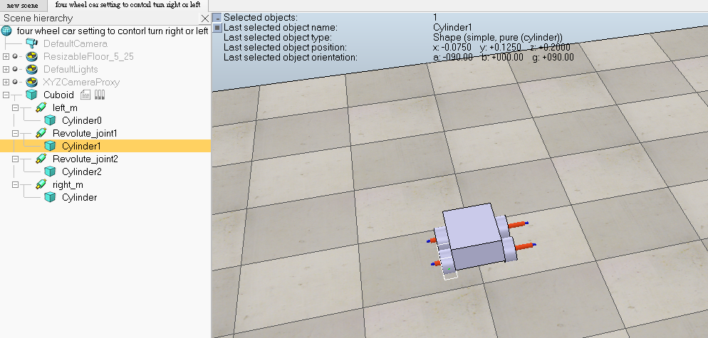

week15-week18 <<
Previous Next >> Assignment
Keyboard control car
參考資料:組長
將繪製好的，能直線運行的四輪車導入v-rep
轉好後將零件所對應的相對運動位置依照圖示中的方式排序
設定馬達將電機開啟 (add > joint 中加入所想要的馬達電機)

勾選motor enabled來啟動馬達，調整轉動速度和力矩的參數
勾選lock motor when target velocity is zero則可以使馬達速度為零時鎖定住馬達

動力學屬性設定:物體的碰撞和動態都必須打開，才能使剛剛設定好的馬達對輪胎作動

將撰寫前後左右及加減速程式碼載入v-rep(add > associated> non threaded)

心得:一開始照著v-rep bubble rob的教程來學習這套軟體，鍵盤控制一開始是3D繪圖軟體將零件轉成stl檔案導入v-rep，設定馬達、動力學參數細項等，之後撰寫程式碼來完成鍵盤控制的部分。沒發現摩擦系數相關的設定可能會有打滑現象，可透過設計改良此問題。
week15-week18 <<
Previous Next >> Assignment